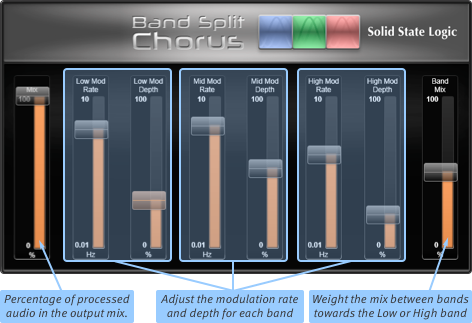
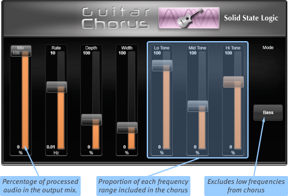
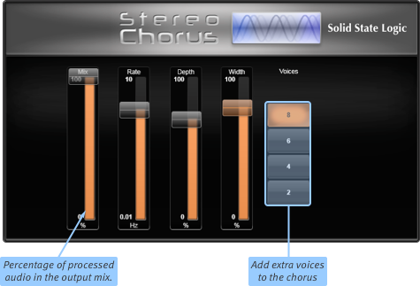
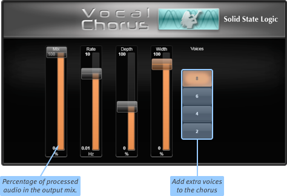
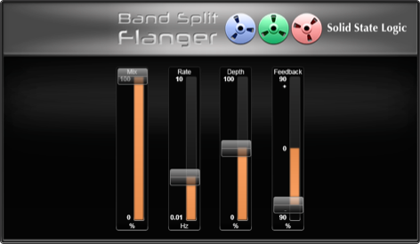
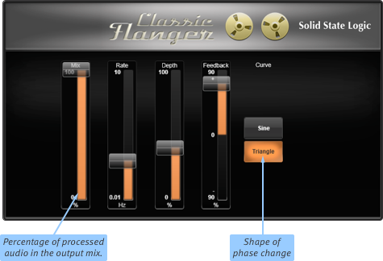
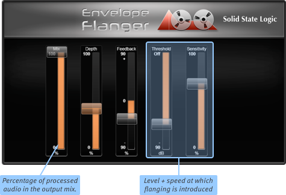
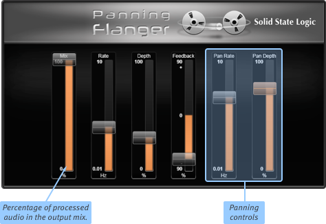
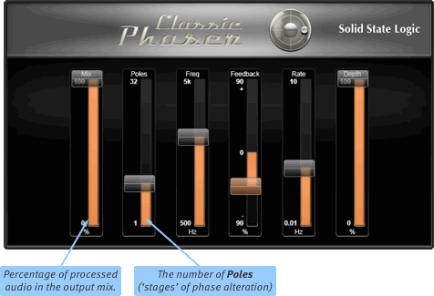

For more information about Effects in general, please see the Effects Rack Overview section.
Modulation Effects
Band-Split Chorus
In this chorus module, the signal is split into 3 bands (crossed-over at 200 Hz and 3 kHz). Each band has a different chorus, thus removing the sense of "pattern" on broad-spectrum sounds.

Band Mix controls the mix between the three bands:
At 50%, all bands are mixed in equally; move the slider down to weight the mix towards the lower band, and up to weight towards the higher band.
The remaining parameters should be self-explanatory.
Guitar Chorus
This chorus includes tone controls, ideally suited to string instruments.

Increase the Lo Tone to add fullness to guitars. Decrease to remove boom on guitars;
Increase the Mid Tone to add attack to guitars or pluck sound on basses;
Increase the Hi Tone to add sharpness or air to guitars.
If Bass Mode is on, the chorus is not added to the bass part of the signal. This is useful for adding chorus to bass guitars without muddying the part.
The remaining parameters should be self-explanatory.
Stereo Chorus
This is a not-so-subtle chorus which is great for making a wide signal from a mono signal. All of the parameters should be self-explanatory:

Vocal Chorus
This is a subtle chorus intended for vocals, which also works well for "fattening up" instruments. All of the parameters should be self-explanatory:

Band-Split Flanger
This provides 8 bands (with crossovers at 50, 100, 200, 400, 800, 1600 and 3200 Hz) of flange with different delays, in order to create a 'cleaner' sound with less wavelength-specific artefacts.

The remaining parameters should be self-explanatory.
Classic Flanger
The Classic Flanger is modelled on the classic early flanger sound.

The remaining parameters should be self-explanatory.
Envelope Flanger
The Envelope Flanger's behaviour is dependent on the envelope of the signal.
Sensitivity is how smoothly it correlates to the envelope of the sound;
Threshold is the level at which flange is introduced.

The remaining parameters should be self-explanatory.
Panning Flanger
This is a flanger with an auto-panner on the output.
Rate is the speed of oscillation, Depth is the width.

The remaining parameters should be self-explanatory.
Classic Phaser
The Classic Phaser is modelled on the classic old-school phaser sound.

The number of Poles ('stages' of phase alteration) used (controlling the number of phase notches created).
The remaining parameters should be self-explanatory.
Useful Links
Detail ViewEffects Rack Overview
Delay Effects
Dynamics Effects
EQ Effects
Reverb Effects
Other Effects Modules
Audio Tools
Automix
Index and Glossary